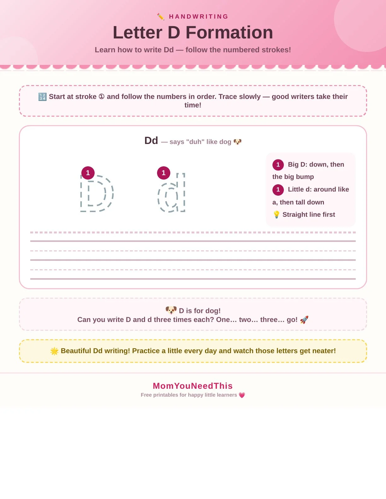

Letter D Formation Practice Trace And Write The Uppercase Letter D
Help your little learner practise forming the uppercase letter D with this fun, no-prep tracing printable. Big, clear letter guides make it easy for little hands.
Quick Answer
One straight line, one big belly: this free printable teaches preschoolers to form the uppercase letter D with guided tracing rows that show where each stroke starts and how the curve should travel. Children trace the letter, then try it on their own — building handwriting muscle memory, plus the /d/ sound connection with words like dog, duck and drum. Print at home with no signup needed.
At a Glance
- Ages: Preschoolers
- Activity: Forming uppercase D — one straight line, one big belly
- Skills: Letter formation and stroke order
- Format: Printable worksheet (PDF)
- Cost: Free, no signup
🐶 Dog
🦆 Duck
🥁 Drum

✏️ Trace, Then Try On Your Own
Start with a finger: trace the big letter D in the air or on the table while you say how it goes. Then move to the worksheet — trace each D slowly, saying the letter name and its sound: “D says /d/, like dog.” Finish with the try-it-yourself row.
⬇️ Download Free Printable 🖨️ Print🎁 Free printable for toddlers & preschoolers
👆 Say It While You Trace
Say the letter name and its sound each time your child traces. Words like dog, duck and drum all begin with the D sound — naming them as the pencil moves ties the shape to the sound.
🎯 Keep It Short And Sweet
The belly is the tiring part of D — it asks for one long, controlled curve. A few minutes of tracing is plenty for little learners. Stop while it is still fun, circle the D whose belly reached the bottom line most neatly together, and come back another day.
🎨 Keep Exploring Free Letter Activities
More alphabet learning activities are added regularly for toddlers and preschoolers.
🎁 View All Free Resources✏️ How To Form The Letter D
Letter D is formed like this. Capital D takes two moves: pull straight down from the top line to the bottom, then go back to the top and curve out like a big belly all the way down to the bottom line. Small d reverses the thinking — draw the little circle first, then a tall line up from its top and straight back down: the circle comes before the line, which is exactly how it differs from b.
Sound and shape travel together on this page: every belly your child draws is a chance to tap out the /d/ sound — d-d-dog. Letters learned as a movement plus a sound are remembered far better than letters learned as pictures to copy.
The mistake to watch for on this page is a belly that does not reach the bottom line, leaving the D looking like a P with a curve. The other classic is a lowercase d drawn backwards, which turns it into a b.
🖨️ How to Use This Printable
Get started in minutes — everything here is free and made for busy parents.
- Download the printable. Tap the download button to save the free Free Letter D Formation Practice file to your device.
- Print it out. Use any home printer and regular paper — cardstock works great for pages little hands will use again and again. The print button opens the full-size page in a new tab if you prefer to print from there.
- Learn together. Sit with your child and say the strokes out loud as they trace the letter D — talking through the moves is what turns copying into memory. Short sessions work best.
- Explore more. Check the free printables linked below for your next activity.
❓ Free Letter D Formation Practice FAQs
Is this Free Letter D Formation Practice printable free?
Yes — every printable on MomYouNeedThis is 100% free to download and print. No signup, no payment, just tap the download button and print the D formation page as often as your child wants more practice.
How do I use this letter d printable?
Print the page and trace together, stroke by stroke: line first, then the belly. Say the letter's name as the pencil moves, and check each belly reaches the bottom line. Short, playful sessions work better than long lessons for little learners.
What literacy skills does this practice?
Formation, pencil control, and letter-sound knowledge. D's page carries an extra load: its lowercase partner reverses the stroke order (circle first), so the pair is worth learning as a story — big D is line-then-belly, small d is circle-then-line. Paired with its /d/ sound in words like dog, duck and drum, it covers the core pre-writing skills.
🔗 More Free Printables You’ll Love
Pair this printable with more free learning activities from the MomYouNeedThis library.
- ✏️ Free Letter E Formation PracticeFree printable letter e formation practice for little learners.
- 🎨 Free Letter D Coloring PageFree printable letter d coloring page for little learners.
- ✏️ Free Uppercase Letter D TracingFree printable uppercase letter d tracing for little learners.
- ✏️ Free Lowercase Letter D TracingFree printable lowercase letter d tracing for little learners.